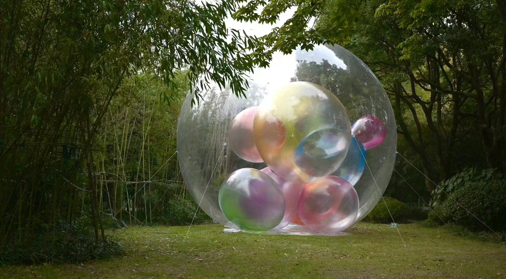

Star Cloud

艺术家：姜竹松 & 石玩玩
透明PVC膜、彩色半透明PVC膜、充气结构，约 6 × 5 m，2023
“Star Cloud”意为星云。作品从宇宙星云的形态与色彩出发，将其抽象为一个透明的大型气泡空间，内部聚合多个大小不一、色彩半透明的气泡体。外层透明膜与内层色彩在自然光、环境与观众视线中相互叠加，使作品同时具有宇宙意象与童年吹泡泡的轻盈感。观众透过多层透明与半透明色彩观看周围的真实世界，景观因此被重新着色、折射与包裹，形成现实与想象相互交叠的观看经验。